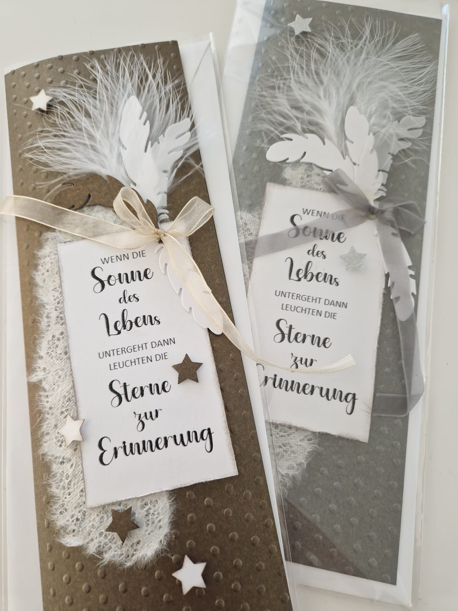
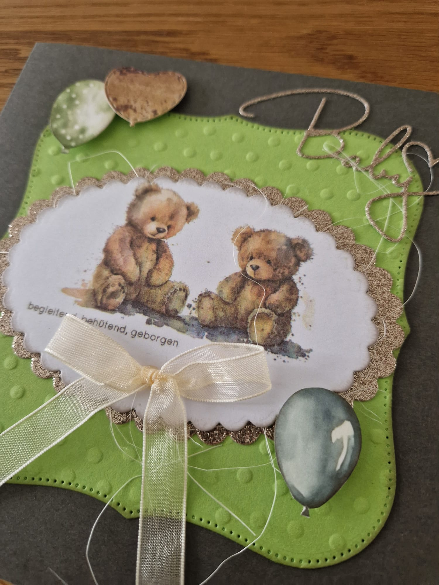
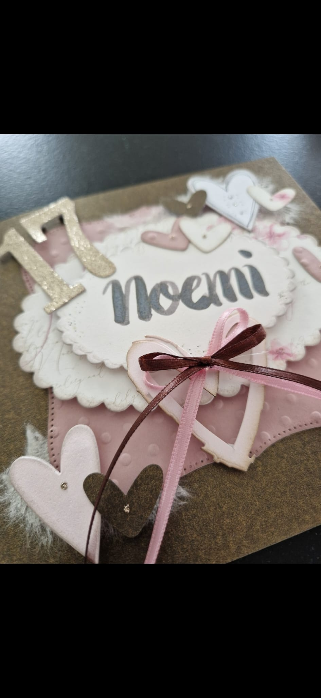

Willkommen in meiner Papierwelt
Ich bin Doris Egli, 48 Jahre alt, Mutter von zwei Kindern und lebe in Rothenburg. In meinem kleinen Atelier entstehen mit viel Liebe zum Detail Karten, die Geschichten erzählen.
Jedes Stück ist ein Unikat – so individuell wie der Anlass, für den es bestimmt ist.

HochzeitenElegant & Edel
Zarte Farben und feine Prägungen für den schönsten Tag.

GeburtstageBunt & Fröhlich
Farbenfrohe Grüsse, die garantiert ein Lächeln schenken.

Besondere AnlässeKreativ & Individuell
Von der Geburtsanzeige bis zum Jubiläum – massgeschneidert.